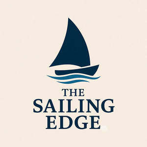

Trade Mark Journal No.2025/021 23 May 2025
UK00004200916 9 May 2025 (21,25,38)

- Class 21
- Mugs; Ceramic mugs; Earthenware mugs; Spatulas [kitchen utensils]; Porcelain mugs; Mugs of porcelain; Cups and mugs; Mugs made of ceramic materials; Tableware, cookware and containers; Trivets [table utensils]; Cookware and tableware, except forks, knives and spoons; Bowls; Plastic bowls [household containers]; Glass mugs; Kitchen utensils; Moulds [kitchen utensils]; China mugs; Mugs of china; Mugs made of porcelain; Coffee mugs; Tenderizers [kitchen utensils]; Compostable bowls; Mugs made of earthenware; Soup bowls; Mugs made of plastic; Vacuum mugs; Tableware, except forks, knives and spoons; Drinking mugs made of porcelain; Coasters (tableware); Beer mugs; Bowls (Glass -); Kitchen containers; Kitchen jars; Dishes [household utensils]; Spatulas for kitchen use; Tableware, other than knives, forks and spoons; Mug racks; Cutlery trays; Household or kitchen utensils; Picnic baskets (Fitted -), including dishes; Fitted picnic baskets, including dishes; Mugs made of china; Travel mugs; Plastic bowls [basins]; Ceramics for kitchen use; Insulated lids for plates and dishes; Egg separators [kitchen utensils]; Tortilla presses, non-electric [kitchen utensils]; Ceramic tableware; Insulated mugs; Utensil jars; Basting spoons, for kitchen use; Spoons (Basting -), for kitchen use; Plastic plates [dishes]; Coffee services [tableware]; Combined lids for kitchen containers; Defrosting trays for kitchen use; Shaving bowls; Household or kitchen containers; Scoops [tableware]; Containers for household or kitchen use; Tea services [tableware]; Kitchen utensils, not of precious metal; Presses (Garlic -) [kitchen utensils]; Garlic presses [kitchen utensils]; Laundry balls for use as household utensils; Turners (kitchen utensil); Baking dishes made of porcelain; Salad bowls; Fruit bowls of glass; Baking dishes made of earthenware; Kitchen utensils of silicon; Jewelry dishes; Baking utensils; Valet trays [receptacles for small objects] for household purposes; Pestles for kitchen use; Kitchen paper racks; Kitchen paper dispensers; Drinkware; Beverage glassware; Kitchen urns [not of precious metal]; Tableware; Graters for kitchen use; Metal baskets for household purposes.
- Class 25
- Shirts; Short-sleeve shirts; Short-sleeved shirts; Long-sleeved shirts; Short-sleeved T-shirts; Polo shirts; Collared shirts; Corduroy shirts; T-shirts; Fishing shirts; Turtleneck shirts; Knit shirts; Maternity shirts; Wristbands [clothing]; Moisture-wicking sports shirts; Tee-shirts; Quilted jackets [clothing]; Aprons [clothing]; Embroidered clothing; Oilskins [clothing]; Visors [clothing]; Shirts and slips; Button-front aloha shirts; Polo sweaters; Tops [clothing]; Sports shirts with short sleeves; Denims [clothing]; Collars [clothing]; Hats; Knitwear [clothing]; Clothing; Beanie hats; Woolen clothing; Rugby shirts; Bottoms [clothing]; Knitted clothing; Gloves [clothing]; Gloves as clothing; Clothing for leisure wear; Bandeaux [clothing]; Sleeved jackets; Babies' pants [clothing]; Linen clothing; Gabardines [clothing]; Sweat shirts; Beach hats; Sleep shirts; Playsuits [clothing]; Gloves for apparel; Cowls [clothing]; Hooded sweat shirts; Fishing clothing; Sports caps and hats; Fabric belts [clothing]; Mitts [clothing]; Night shirts; Sleeveless jackets; Ramie shirts; Mock turtleneck shirts; Ski hats; Triathlon clothing; Knit jackets; Trunks being clothing; Clothes; Sweatshirts; Muffs [clothing]; Baseball hats; Under shirts; Corsets [clothing, foundation garments]; Jogging bottoms [clothing]; Fur hats; Ready-to-wear clothing; Belts [clothing]; Belts for clothing; Denim jackets; Pique shirts; Printed t-shirts; Clothes for sports; Baseball caps and hats; Beach clothing; Ties [clothing]; Men's and women's jackets, coats, trousers, vests; Hoods [clothing]; Clothes for sport; Windproof clothing.
- Class 38
- Streaming of video material on the internet; Streaming audio and video material on the Internet; Video broadcasting; Broadcasting of video and audio programming over the Internet; Streaming of audio material on the internet; Video, audio and television streaming services; Transmission of video films; Transmission of videos, movies, pictures, images, text, photos, games, user-generated content, audio content, and information via the Internet; Audio and video broadcasting services provided via the Internet; Video on demand transmissions; Transmission of audio and video content via computer networks.
Kenneth John Edge